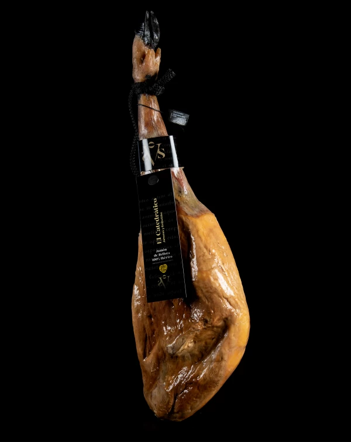
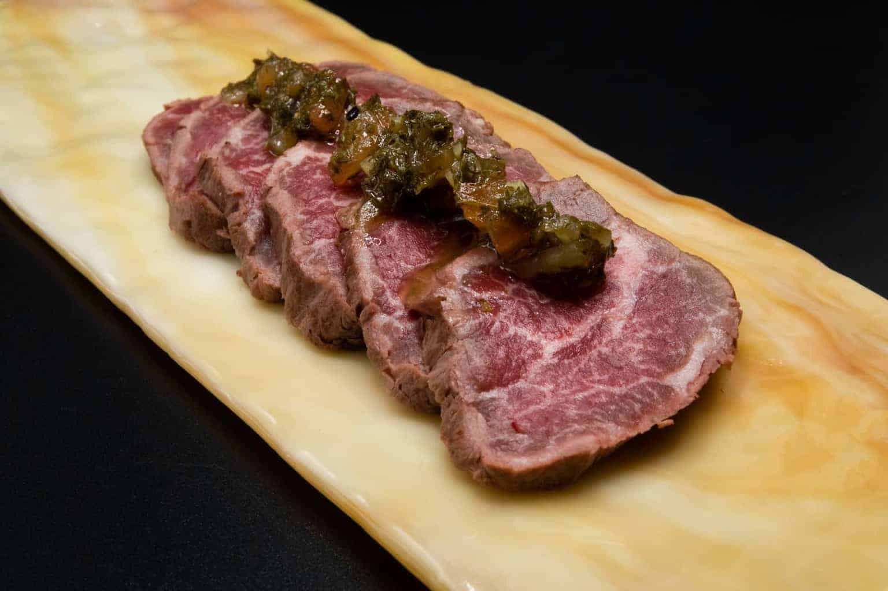
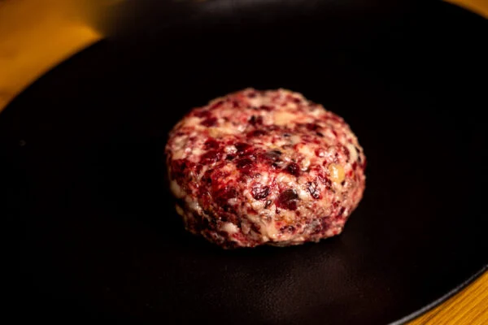
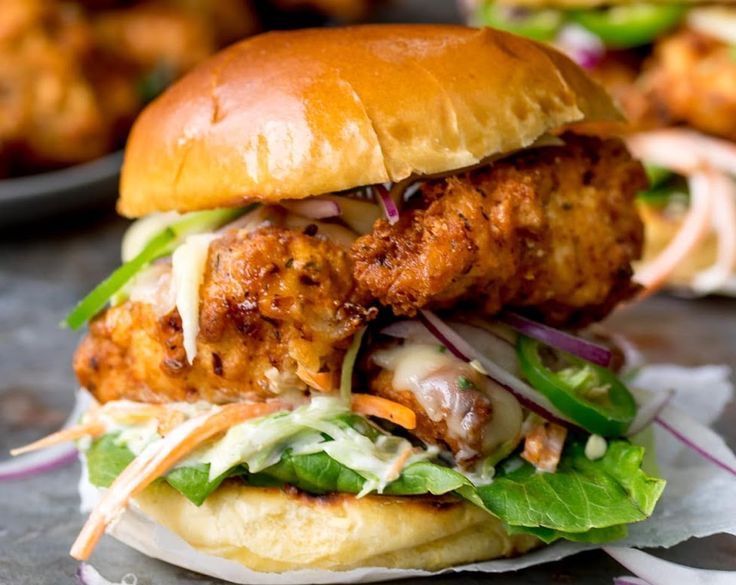
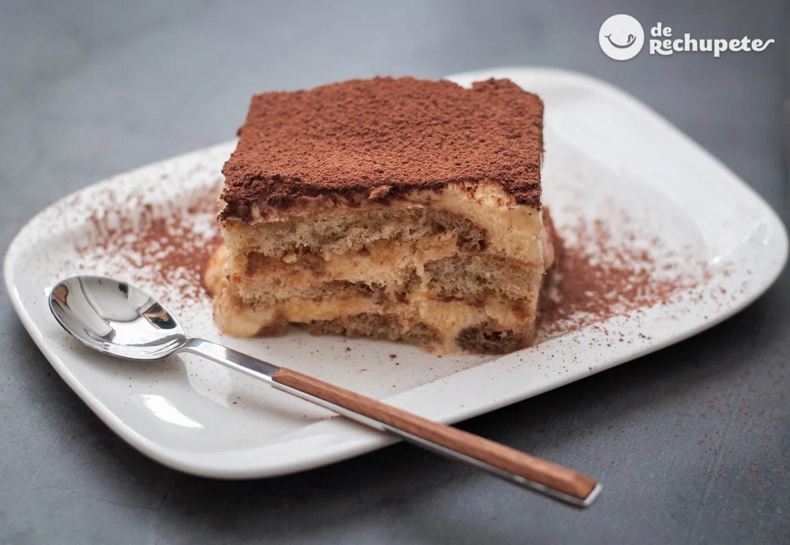
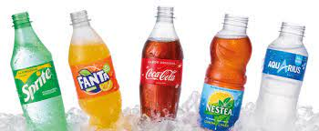

Nuestro Jamón de bellota 100% ibérico conserva el aroma y el sabor de siempre gracias a una controlada curación de 36 meses que le confieren a la carne una textura fina y jugosa/248,500€
Considerada la mejor carne del mundo, os ofrecemos un tataki elaborado con piezas nobles de Waguy de las prefacturas de Kagoshima, Miyazaki o Hokaido en Japón, calidad A5 y indice BMS 10, 11 o 12/70,00€
Nuestra Hamburguesa de Vaca Rubia Gallega (120 días de maduración) y Buey Gallego (180 días de maduración) es el resultado de una selección cuidadosa de la mejor carne de vaca rubia gallega y de buey gallego, madurada durante más de 120 y 180 días, respectivamente./17,50€
Un Pollo perfecto y crujiente, servido en pan tostado, con jalapeños, ensalada de col casera con mostaza y miel.El recubrimiento para el pollo frito con suero de leche es súper simple de hacer, realmente sabroso y se usa como base para esta receta de hamburguesas./8,50€
uno de nuestros mejores postres proveniente desde Italia /5,50€
Tarta de queso cremosa y hecha al horno /6,50€

bebidas gaseosas con mucho sabor /2,30€ cada una
